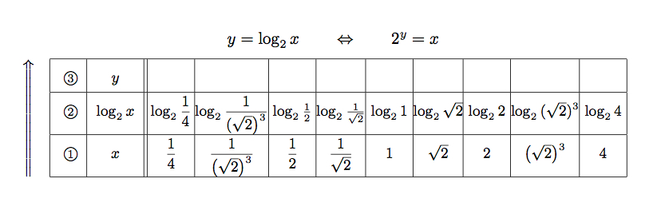
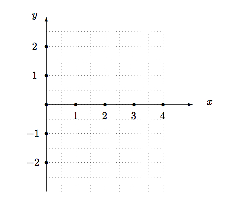
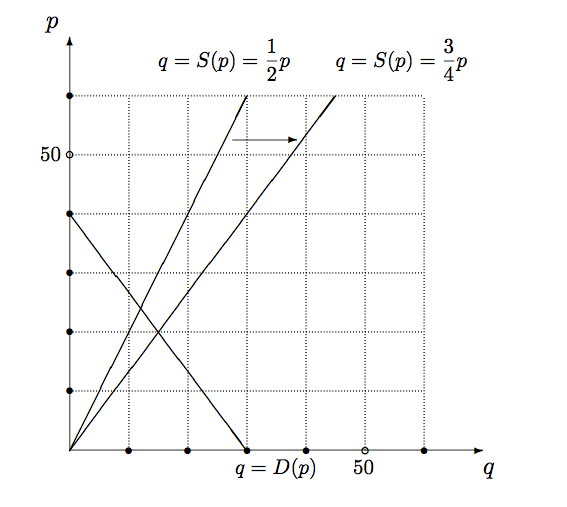
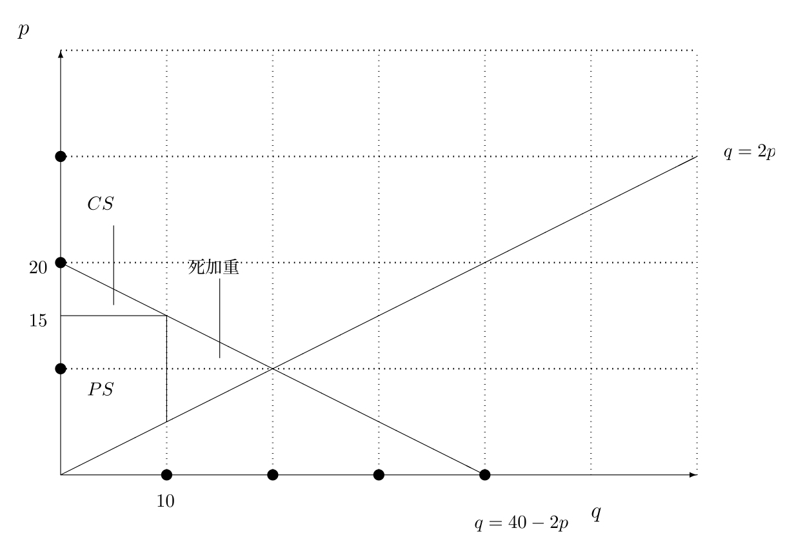

正誤表
全体を通じて
- 「POINT」の項目に「・」がついたりつかなかったりと不統一．意図的だったかどうかはもう忘れました．
第1章「1次関数と市場メカニズム」
- 6ページ，
POINT
（誤） 左右の式が同じ意味であることを示しています．
→
（正） 左右の式が同じ意味であることを示している．
- 7ページ，
追加的説明
（あ）の前に，「$y=30-\dfrac{3}{4}x$とおく．」を記述する．
- 7ページ，
POINT
（誤）$x$と$y$を入れ替え，．
→
（正）$x$と$y$の役割を入れ替え，
- 9ページ，
問1.5はPOINTと同じ問題なので，問題変更 $f(x)=2x+1$ → $f(x)=2x+2$．
- 10ページ，追加的説明
「かわに $g(x)=1+x^2$」
→
「かわに $y=g(x)=1+x^2$」
- 14ページ，問題文の追加的説明
このとき市場均衡はどうなるか分析しなさい．
→
このとき新たな供給曲線を図1.6に描き加え，市場均衡がどうなるか分析しなさい．
p.215の解答例には既に，描き加えてある．
- 19ページ，
脚注
（誤） 日本経済出版社
→
（正） 日本経済新聞出版社
第2章「2次関数と独占・寡占市場」
- 28ページ，グラフ
（誤）$y=ax^2$
→
（正）$Y=aX^2$}
- 30ページ，追加的説明
頂点の $x$ 座標は $\dfrac{\alpha +\beta}{2}$．
→
頂点の $x$ 座標は $\dfrac{\alpha +\beta}{2}$（$x=\alpha , \beta$ の中点）．
- 31ページ，グラフ
（誤）縦軸切片の称対位置
→
（正）縦軸切片の対称位置
- 35ページ，
例題2.4，解答．誤りではありません．説明不足かなと思って．
(訂正前) 利潤は $y={\pi}(p)=(p-400)\left(500-\dfrac{1}{2}p\right)$
→
(訂正後) 利潤は $y={\pi}(p)=pq-400q=(p-400)q=(p-400)\left(500-\dfrac{1}{2}p\right)$
- 39ページ，
例題2.5，追加説明．
(訂正前) 独占と複占の場合を比較して表にまとめる．
→
(訂正後) 独占と複占の場合を比較して表にまとめる．消費者余剰は図2.2から求めた．
第3章「指数・対数と金利」
- 44ページ，POINT
（誤）$c\underbrace{(1+r)\times \times (1+r) \times \cdots \times (1+r)}_{t個}円$
→
（正）$c\underbrace{(1+r)\times \times (1+r) \times \cdots \times (1+r)}_{t個}=c(1+r)^t$円
- 48ページ，POINT
（誤）自然数$n,m=1,2,\ldots$と
→
（正）自然数$m,n=1,2,\ldots$と
- 51ページ，例題3.3
（誤）$n=-4$, $m=2$としても
→
（正）$m=2$, $n=-4$$としても
- 51ページ，問3.11
（誤）$n=-2$, $m=-3$としても
→
（正）$m=-3$, $n=-2$$としても
- 51ページ，3.2.4節
（誤）指数法則と有理数に対する指数の拡張
→
（正）有理数に対する指数の拡張
- 51ページ，POINT
次を付け加える
→
$a>0$とする．
- 52ページ，問3.13
問3.6で練習した指数法則(3.5)を使うと
→
p.54の定理3.1で学ぶ指数法則(3.11)を先取って使うと
- 53ページ，問3.14
指数法則を用いて
→
p.54の定理3.1の指数法則を用いて
- 54ページ，POINT（3.10）式 追加説明
（誤）$\dfrac{a^x}{a^y}=a^{x-y}$
→
（正）$\dfrac{a^x}{a^y}=a^{x-y}$ 特に $\dfrac{1}{a^y}=a^{-y}$
- 55ページ，例題3.4最終段落
（誤）これを解き，$x=1, y=-3$
→
（正）これを解き，$x=1, y=-3$．（ピリオド追加）
- 60ページ，例題3.7の前に追加説明
ゼロクーポン債とは決められた期日になると券面に記された額が支払われる債券です．詳細は4.4.1節で．
- 67ページ，問3.28は次表に差替え

- 68ページ，問3.29は図3.9は次図に差替え

- 70ページ，ちょっとメモ
（誤） 例題の解答例に
→
（正）例の解答に
- 72ページ，問3.34
（誤） 計算しなさい．
→
（正）計算しなさい（小数点以下3位で四捨五入すること）．
- 72ページ，問3.34、例（１）
（誤） 0.6309．
→
（正）0.63．
- 72ページ，問3.34、例（２）
（誤） 1.4651．
→
（正）1.47．
- 72ページ，
例題3.14 解答．
桁数の取り違えによる，不等号の向きの誤り．結論もそれに引きずられた誤り．
（誤）$10^{11}<2^{38}<10^{12}$より，$2^{38}$は$12$桁の整数である．
\begin{align*}
2^{38}\; {\rm mm}<100,000,000,000\; {\rm mm}&\Leftrightarrow 2^{38}\; {\rm mm}<100,000,000\;{\rm m}\\[2mm]
&\Leftrightarrow 2^{38}\; {\rm mm}<100,000\; {\rm km}\\[2mm]
&\Leftrightarrow 2^{38}\; {\rm mm}<10万 {\rm km}%\\[2mm]
\end{align*}
であるので，$38$回ではまだ届かない．
→
（正）
$10^{11}<2^{38}<10^{12}$より，$2^{38}$は$12$桁の整数である．
\begin{align*}
2^{38}\; {\rm mm}>100,000,000,000\; {\rm mm}&\Leftrightarrow 2^{38}\; {\rm mm}>100,000,000\;{\rm m}\\[2mm]
&\Leftrightarrow 2^{38}\; {\rm mm}>100,000\; {\rm km}\\[2mm]
&\Leftrightarrow 2^{38}\; {\rm mm}>10万 {\rm km}%\\[2mm]
\end{align*}
であるので，$38$回で届く可能性は否定できない．（実際は$2^{38}=274,877,906,944\approx 27万{\rm km}$なので届かない）
詳解はおまけふろく（２）の該当問題で．
- 76ページ，
問3.39 不都合な誤りではありません．
問題の後に
 解答 p.225 の指示
解答 p.225 の指示
- 77ページ，例題3.16，検算
（誤） やや低く利子率を
→
（正）やや低く値上がり率を
- 77ページ，
例題3.16解答．小数の位のミス．これに続く式では正しい値が使われている．
（誤） 実際は $(1+r)^{37}=9$ から $r=\sqrt[37]{9}-1\approx 0.611$
→
（正） 実際は $(1+r)^{37}=9$ から $r=\sqrt[37]{9}-1\approx 0.0611$
- 77ページ，問3.41
（誤） 闇金融の利率
→
（正）闇金融の利子率
- 77ページ，
ちょっとメモ．少し舌足らずで誤解をうみそうf(^-^;．
（誤） 10日経つごとに利息の1割だけを返済させる．
→
（正） 10日経つごとに利息分として1割だけを返済させる．
- 79ページ，問3.43
（誤） 指数法則・対数法則を用いて
→
（正）指数法則を用いて
第4章「数列と貯蓄」
- 85ページ，例題4.2（式番号の位置を適切な場所に）
（誤） $a_{t}=\underbrace{\delta \times \cdots \times \delta}_{t-1個}c\qquad(4.2)$
→
（正） $a_t=c{\delta}^{t-1}\qquad (4.2)$
- 89ページ，
誤りではありません．
問4.10と問4.11の順序を逆にした方がよかったかもしれない．問4.10解答例参照．
- 91ページ，POINTで
数列の収束，発散の判断をするのに $c > 0$ を暗黙の了解にしている．『経出る』（例題4.3）では $c=1$ で解説．
- 91ページ，例題4.7
（誤） 次の数列の$t \to \infty$
→
（正） 次の数列で$t \to \infty$
- 91ページ，例題4.7（2）式（初項を付け加える）
（誤） $a_{t+1}=\dfrac{2}{3}+2.$
→
（正） $a_{t+1}=\dfrac{2}{3}+2, a_1=1.$
- 92ページ，問4.14
（誤） 次の数列の$t \to \infty$
→
（正） 次の数列で$t \to \infty$
- 92ページ，問4.14（4）（初項を付け加える）
（誤） $a_{t+1}=\sqrt{6+a_t}$
→
（正） $a_{t+1}=\sqrt{6+a_t}, a_1=1$
- 94ページ，POINT
（誤） 次の線形性が成立する．
→
（正） 次の性質が成立する（線形性という）．
- 95ページ，問4.17（２）
ヒントをつける
→
$\cdots\quad $ ヒント：$\sum_{k=1}^{t}k^2=\dfrac{1}{6}t(t+1)(2t+1)．$
- 95ページ，POINT．$\displaystyle\lim_{t\to \infty}$ が抜けている．
（誤） $S_t=c\dfrac{1}{1-\delta}$
→
（正） $\displaystyle \lim_{t\to \infty}S_t=c\dfrac{1}{1-\delta}$
- 97ページ，脚註．「ふなっしー」 が抜けている．
（誤） 「ひこにゃん」とか「くまモン」とか「カツオ人間」とかを
→
（正） 「ふなっしー」とか「ひこにゃん」とか「くまモン」とか「カツオ人間」とかを
- 98ページ，例題4.11．
（誤） 期首
→
（正） 期初
- 98ページ，問4.19．
（誤） 直後の時点での口座残高を
→
（正） 直後の時点での$10$年分の口座残高を
- 102ページ，POINTで
訳語についての補足．
Time Line（時間軸），Cash Flow（キャッシュ・フロー），Discount Factor（割引因子），Present Value（現在価値）
- 105ページ，例題4.16，106ページ例題4.17，問4.25，大文字を小文字に
（誤）$P$
→
（正）$p$
- 105ページ，例題4.16．
（誤） （答は小数点以下第2位まで求めなさい）．
→
（正） （答は小数点以下第3位を切捨てて求めなさい）．
- 106ページ，問4.23．
（誤） （答は小数点以下第2位まで求めなさい）．
→
（正） （答は小数点以下第3位を切捨てて求めなさい）．
- 106ページ，問4.24．
（誤） 価格を求めなさい．
→
（正） 価格を求めなさい（答は小数点以下第3位を切捨てて求めなさい）．
- 109ページ，ちょっとメモ．
（誤） ゼロクーポン債の利回りを
→
（正） ゼロクーポン債で利回りを
- 112ページ，例題4.09．追加説明
$\dfrac{w}{1-\delta}$.のあとに，
→
$\dfrac{w}{1-\delta}$.
これが$\displaystyle \sum_{t=1}^{\infty}{\delta}^{t}w_t$と等しいので，
$\displaystyle w=(1-\delta)\sum_{t=1}^{\infty}{\delta}^{t}w_t$となる．
- 113ページ，
問4.26 不都合な誤りではありません．
問題の後に 解答 p.228 の指示
- 118ページ，例題4.23．
（誤） 左辺を$(x-(1+c))$ で割ると
→
（正） 左辺を$x-(1+c)$ で割ると
- 119ページ，例題4.25．
（誤） $\approx 0.0417=4.17\%$
→
（正） $\approx 0.0417=4.17\%$（四捨五入）
- 121ページ，
問3.39 不都合な誤りではありません．
（誤）各期の利率が → （正） 各期の利子率が
第5章「1変数の微分と利潤最大化」
- 第5章・第7章を通じて，
「1階の条件」と「1階条件」が混在している．
- 123--4ページ，ポイント追加説明：
・記号「’」は日本ではダッシュと読むひとが多い．英語読みはプライム．の次に一行差し込む
→
・経済学でよく使われる記号として$\dfrac{d}{dx}$がある．
- 125ページ，問5.2（４）問題変更：
例題5.1(4)と問5.2(4)に同一問題を出してしまったため
(変更前) $f(x)=300x-x^2$
→
(変更後) $f(x)=px-x^2$
- 131ページ，例題5.5解答
（誤）$u=x\Bigl(15-\dfrac{P_x}{8}x\Bigr)+x+15-\dfrac{P_x}{8}x$ →
（正）$u=x\Bigl(15-\dfrac{P_x}{8}x\Bigr)+x+\Bigl(15-\dfrac{P_x}{8}x\Bigr)$
- 138ページ，標準問題説明文
（誤）このように最大化問題や最小化問題を
→
（正）このように最適化問題を
- 147ページ，例題5.14
（誤） かわ（入れ物）に$g(x)=1+x^2$←あん（中身）をつめる
→
（正） かわ（入れ物）に$u=g(x)=1+x^2$←あん（中身）をつめる
- 148ページ，POINT
（誤） $R(x)-C(x)=\sqrt{x}-cx$
→
（正） $R(x)-C(x)=\sqrt{x}-10x$
第6章「ベクトルと予算制約」
- 157ページ，例題6.2
利益 → 収入 としたほうが誤解がなさそう．
- 166ページ，POINT(3)追加説明
（誤）a+0=a →
（正）a+0=a（ゼロベクトル）
- 166ページ，POINT(4)追加説明
（誤）a+(-a)=0 →
（正）a+(-a)=0（逆ベクトル）
- 166ページ，例題6.5
（誤）次の図を使って → （正）図形を使って
- 178ページ，POINT
（誤）$y=ax+b \Longleftrightarrow
\begin{pmatrix}
a\\
-1
\end{pmatrix}
\cdot
\begin{pmatrix}
x\\
y
\end{pmatrix}
=-b$ →
（正）$ax+by=c \Longleftrightarrow
\begin{pmatrix}
a\\
b
\end{pmatrix}
\cdot
\begin{pmatrix}
x\\
y
\end{pmatrix}
=c$
- 178ページ，問6.24
（誤）内積表示が(6.16)式となることを→
（正）内積表示が
$\begin{pmatrix}
a\\
-1
\end{pmatrix}
\cdot
\begin{pmatrix}
x\\
y
\end{pmatrix}
=-b$となることを
- 178ページ，POINT
（誤）$z=ax+by+c \Longleftrightarrow
\begin{pmatrix}
a\\
b\\
-1
\end{pmatrix}
\cdot
\begin{pmatrix}
x\\
y\\
z
\end{pmatrix}
=-c$ →
（正）$ax+by+cz=d \Longleftrightarrow
\begin{pmatrix}
a\\
b\\
c
\end{pmatrix}
\cdot
\begin{pmatrix}
x\\
y\\
z
\end{pmatrix}
=d$
- 179ページ，問6.26
（誤）内積表示が(6.17)式となることを→
（正）内積表示が
$\begin{pmatrix}
a\\
b\\
-1
\end{pmatrix}
\cdot
\begin{pmatrix}
x\\
y\\
z
\end{pmatrix}
=-c$となることを
第7章「多変数関数の微分」
- 181ページ，第7章のOUTLOOK（2）
（誤）制約なしの最適化：$1$階の条件を使って多変数関数の最適化問題を解く
→
（正）1階条件：多変数関数の制約なしの最適化問題を解く
- 184ページ，ちょっとメモ
（誤）「デル」で出る
→
（正）「でる」で出る
- 184ページ，ちょっとメモ
（誤）ただし↑に書いた通り
→
（正）また↑に書いた通り
- 187ページ，POINT
（誤）関数 $f(x,y)$ が
→
（正）関数 $f(x_1,\ldots ,x_n)$ が
- 192ページ，例題7.2のあとの説明
（誤）$0,=,-$でつなぐところを$0,=,+$でつないでも実害はない．
→
（正）$0,=,-$でつなぐところを$0,=,+$でつないでも解くだけなら実害はない．
- 193ページ〜195ページ，198ページ〜199ページ，200〜203ページ
問7.7・
問7.8・
問7.9・
問7.10，
例題7.5，
問7.15，
例題7.6，例題7.7，
問7.16，
問7.17，
問7.18，
問7.19，
問7.20
（誤）
変数に条件なし
→
（正） 変数に非負条件をつける．
特に問7.8は$\displaystyle \max_{x>0,y>0}\dfrac{1}{3}\log_{}{x}+
\dfrac{2}{3}\log_{}{y}$
問7.18，問7.19，問7.20は
$
\displaystyle \max_{x_1>0,x_2>0,x_3>0}
$
としないと数学上の問題がでそう．それ以外は経済学の問題として非負条件は暗黙の了解と考えてよい．
- 205ページ，例題7.8，解答（2）
（誤）
交点がふたつで，最適解とはならない．
は
→
（正）
交点がふたつで，これらの交点は最適解とはならない．
- 207ページ，
問7.22(3)
（誤）
$
(x,y)=(3,2)
$
は
→
（正）
$
(x,y)=(6,2)
$
は
- 209ページ，
問7.24
（誤）
例題にならって
→
（正）
例題7.10にならって
解答
- 215ページ，問1.5
（誤） $f(x)=\dfrac{1}{2}x-\dfrac{1}{2}$
→
（正） $f(x)=\dfrac{1}{2}x-1$．（問1.5の変更にあわせて）
- 215ページ，
問1.9（2）
次図に置き換え

- 217ページ，
問1.12（2）
次図に置き換え

- 219ページ，
問2.5
（誤） $0$
→
（正） $y=0$
- 223ページ，
問3.11（1）（2）： $n$ と $m$ の取り違えあり．本質的にはやることは一緒．
（誤）
（１）$\displaystyle a^{-2} a^{-3}=\frac{1}{a^2}\times\frac{1}{a^3}=\frac{1}{a^2a^3}=\frac{1}{a^5}=a^{-5}$．
（２）$\displaystyle \left(a^{-2}\right)^{-3}=\bigl(\frac{1}{a^2}\bigr)^{-3}
=\frac{1}{(\frac{1}{a^2})^3}=\frac{1}{\frac{1}{a^6}}=1\div \frac{1}{a^6}=a^6=a^{(-2)\times (-3)}$．
→
（正）
（１）$\displaystyle a^{-3} a^{-2}=\frac{1}{a^3}\times\frac{1}{a^2}=\frac{1}{a^3a^2}=\frac{1}{a^5}=a^{-5}=a^{-3-2}$．
（２）$\displaystyle \left(a^{-3}\right)^{-2}=\bigl(\frac{1}{a^3}\bigr)^{-2}
=\frac{1}{(\frac{1}{a^3})^2}=\frac{1}{\frac{1}{a^6}}=1\div \frac{1}{a^6}=a^6=a^{(-3)\times (-2)}$．
- 225ページ，
問3.34（小数点以下第３位で四捨五入した結果）
（誤） (1) 1.585, (2) 0.682, (3) 0.699, (4) 2.322, (5) 22.51, (6) 47.19
→
（正）(1) 1.59, (2) 0.68, (3) 0.70, (4) 2.32, (5) 22.52, (6) 47.19
- 225ページ，
問3.35
（誤） $\dfrac{8}{\log_{10}{2}}=26.5$
→
（正）$\dfrac{8}{\log_{10}{2}}\approx 26.5$
- 225ページ，
問3.42（追加説明）
（誤） $ce^{rt}=a$ を解けばよい．
→
（正）$ce^{rt}=a$ を解けばよい．$c=\dfrac{a}{e^{rt}}=ae^{-rt}$．
- 226ページ，問4.7，例題4.4に合わせる．
（誤） $\dfrac{FV_t}{FV_{t-1}}=\dfrac{c(1+r)^t}{c(1+r)^{t-1}}=(1+r)$ なので，
→
（正） $\dfrac{FV_{t+1}}{FV_{t}}=\dfrac{c(1+r)^{t+1}}{c(1+r)^{t}}=(1+r)$ なので，
- 227ページ，問4.15(7)，添字を問題に合わせる．
（誤） $\displaystyle \sum_{k=1}^{\infty}{ca_k}$
→
（正） $\displaystyle \sum_{t=1}^{\infty}{ca_t}$
- 228ページ，問4.23,(1)
（誤）$0+96.12=96.12$
→
（正）$0+96.11=96.11$
- 228ページ，
問4.20
（誤）$13,206,787$円
→
（正）$13,206,786$円（小数点以下切捨て）
- 228ページ，
問4.28（2）
（誤）$5.16\%$
→
（正）$7.79\%$
- 229ページ，
問5.2(4)
（誤）$300-2x$
→
（正） $p-2x$
- 229ページ，
問5.13(4)
（誤）$x=5$．
→
（正）$x=5$．よって（１）
- 236ページ，
問7.4（1）
（誤）$(2^3\times 3^4, 2^3\times 3^3)$
→
（正）$1$階条件の解は $(2^3\times 3^4, 2^3\times 3^3)$ であるが，最大解でも最小解でもない．詳細は問7.4（1）の解答例で．
-
237ページ，問7.22（3）
（誤） $\begin{pmatrix}
\displaystyle \frac{\partial f}{\partial x}(3,2)\\[1ex]
\displaystyle \frac{\partial f}{\partial y}(3,2)
\end{pmatrix}
=
\begin{pmatrix}
6\\
4
\end{pmatrix}
$
$\begin{pmatrix}
\displaystyle \frac{\partial g}{\partial x}(3,2)\\[1ex]
\displaystyle \frac{\partial g}{\partial y}(3,2)
\end{pmatrix}
=
\begin{pmatrix}
1\\
2
\end{pmatrix}
$
∴
$
\begin{pmatrix}
6\\
4
\end{pmatrix}
\neq \lambda
\begin{pmatrix}
1\\
2
\end{pmatrix}
$
→
（正）
$\begin{pmatrix}
\displaystyle \frac{\partial f}{\partial x}(6,2)\\[1ex]
\displaystyle \frac{\partial f}{\partial y}(6,2)
\end{pmatrix}
=
\begin{pmatrix}
12\\
4
\end{pmatrix}
$
$\begin{pmatrix}
\displaystyle \frac{\partial g}{\partial x}(6,2)\\[1ex]
\displaystyle \frac{\partial g}{\partial y}(6,2)
\end{pmatrix}
=
\begin{pmatrix}
1\\
2
\end{pmatrix}
$
∴
$
\begin{pmatrix}
12\\
4
\end{pmatrix}
\neq \lambda
\begin{pmatrix}
1\\
2
\end{pmatrix}
$
監修者のあとがき
- 239ページ
（誤） 改訂版『改訂版 経済学で出る数学−高校数学から攻める』
→
（正） 改訂版『経済学で出る数学−高校数学から攻める』
索引
- （誤）$1$階条件 127→（正）127, 187
- （誤）$2$次方程式の解の公式 116→（正）117
- （誤）$45$度線 5→（正）6
- （誤）AVC最小化条件 141→（正）140
- （誤）逆ベクトル 163→（正）163, 166
- （誤）効用関数 130→（正）196, 204
- （誤）最適化問題 128→（正）127
- （誤）三平方の定理 168→（正）168, 175
- （誤）次数 163→（正）削除
- （誤）指数法則 48→（正）48, 54
- （誤）収束 91→（正）90
- （誤）償還年 101→（正）償還年数 101
- （誤）初項 84→（正）82
- （誤）零ベクトル 162,163→（正）162,163,166
- （誤）弾力性 23→（正）23, 151
- （誤）プライシング 34→（正）削除
- （誤）平方完成 30→（正）33
- （誤）偏微分 182→（正）183
- （誤）法線ベクトル 176, 207→（正）176, 208
- （誤）マーシャルの罠 6→（正）6, 67
- （誤）ラグランジュの未定乗数法 190→（正）190, 196, 200
(2015年12月22日現在)